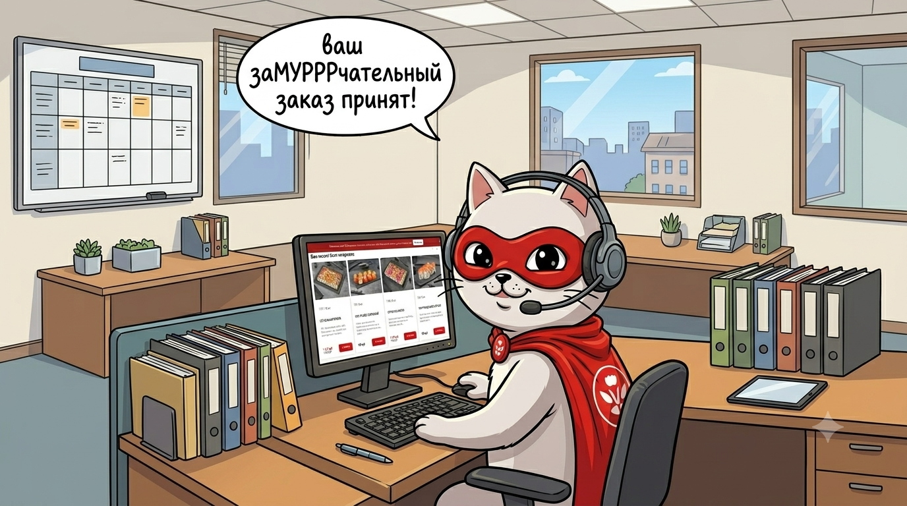

Интернет ложится, а продажи – нет
Как Суши Мастер спасает заказы в условиях регулярных сбоев связи
Бизнес-контекст
В последнее время мы все чаще сталкиваемся с тем, что привычная цифровая инфраструктура связи работает нестабильно. Внезапные перебои с интернетом, «упавшая» онлайн-оплата на сайтах и зависающие платежные терминалы в руках у курьеров — это новая реальность ритейла и фудтеха. Для любого бизнеса в сфере доставки еды такие сбои грозят гарантированной потерей клиентов прямо на этапе чекаута в любой день недели.
Пока конкуренты слепо надеются на стабильное беспроводное соединение и теряют заказы из-за технических ошибок эквайринга, мы в Суши Мастер решили адаптироваться и действовать на опережение.

Проблема
Ошибка 404 в кассовом чеке: как технический сбой выжигает конверсию
Когда у клиента падает интернет или зависает шлюз онлайн-оплаты, бизнес сталкивается с тремя критическими угрозами:
• Рост брошенных корзин: Гость сформировал заказ, настроился на ужин, но споткнулся на этапе оплаты. Второй раз вводить данные карты или перезагружать страницу он, скорее всего, не будет — у него падает уровень доверия, и он уходит к агрегаторам или локальным конкурентам.
• Кассовые разрывы на точках: Продукты закуплены, повара на смене, но из-за «лёгшего» интернета поток заказов искусственно блокируется.
• Волна негатива в поддержке: Перегруженный колл-центр не справляется с агрессивными звонками в стиле «Деньги списались, а где мой статус заказа?!».
Решение
Разворачиваем аналоговый щит: перевод онлайн-потока в «старый добрый голос»
Мы разработали и внедрили комплексную дорожную карту по удержанию заказов в периоды жестких ограничений связи. Главный инсайт стратегии: если цифровые каналы штормит, нужно максимально упростить и сократить путь клиента до прямого контакта с человеком. Мы сознательно реанимировали телефонные продажи, сделав их главным спасательным кругом для выручки.
Ниже подробно разобраны 4 ключевых элемента нашей антикризисной дорожной карты.
Информационные растяжки вместо брошенных корзин
Когда ложится онлайн-оплата, гость не должен блуждать по интерфейсу сайта в поисках альтернативного решения или бесконечно обновлять страницу банка.
Механика
Мы оперативно развернули сквозные яркие инфо-баннеры (растяжки) в каждом городе присутствия для каждого нашего бренда.
Фокус элемента
На баннерах размещена крупная, контрастная, кликабельная кнопка с номером телефона колл-центра. Одно нажатие на экране смартфона — и гость уже на линии с оператором. Это мгновенно перехватывает «зависающий» трафик и спасает корзину от удаления.
Push и Email как превентивный удар
Мы задействовали ключевые каналы прямой связи с клиентской базой (CRM), чтобы заранее предупредить гостей о возможных сетевых аномалиях и выдать им четкий, понятный алгоритм действий.
Мобильные пуши
Мы отказались от длинных текстов в пользу коротких, емких уведомлений. Главное нововведение — мы прямо в текст пуша «зашиваем» прямые номера телефонов колл-центра. Даже если приложение из-за отсутствия сети перестанет подгружать меню, нужный контакт уже останется на экране смартфона гостя.
Email-рассылки
Подготовили серию писем с заботливым предупреждением. Мы честно говорим о периодических сбоях на стороне провайдеров и даем наглядную пошаговую шпаргалку, как гарантированно оформить доставку, минуя капризные интернет-протоколы.
Честность как триггер лояльности в Telegram и ВК
В официаческих сообществах ВКонтакте, Telegram-каналах и в приложении MAX мы принципиально отказались от сухих корпоративных формулировок, замалчивания проблем или стандартных отговорок в духе «Технические работы».
Механика
Опубликовали прямые, открытые посты-инструкции. Посыл максимально прозрачный: «Друзья, если интернет штормит, а безнал не проходит — не переживайте. Готовьте наличные и смело диктуйте заказ по телефону!».
Бизнес-эффект
Искренность и забота в кризисный момент сработали как мощный бустер лояльности. Аудитория видит, что бренд контролирует ситуацию, не прячется от проблем и предлагает реальную альтернативу.
Органический дисклеймер в промо-рассылках
Мы пересмотрели логику наших регулярных продуктовых и скидочных рассылок в мессенджерах (WhatsApp, Viber).
Механика
В тело каждого стандартного промо-оффера мы органично вшили важный дисклеймер. Мягко напомнили клиентам о нестабильности связи на рынке в последнее время и деликатно подсказали, что наличные деньги — это самый надежный и бесперебойный способ оплаты при любых технических неполадках у курьерских служб.
Результат
Вместо паники и хаоса на этапе доставки мы получили подготовленного клиента, у которого к приезду курьера уже отсчитана нужная сумма без необходимости искать сеть для терминала.
Ситуация под контролем
В итоге мы получили управляемый трафик вместо хаоса. Пока остальные будут разбираться с негативом из-за сорванных транзакций и зависших шлюзов, Суши Мастер готов к повышенным нагрузкам на колл-центр.
Благодаря оперативно развернутой дорожной карте мы перехватываем спрос в моменты сбоев и конвертируем его в реальную выручку через телефонные продажи.
Адаптируйся или теряй заказы
Современный фудтех — это не только красивые фотографии сетов и скорость работы mobile софта. Это способность бизнеса оставаться жизнеспособным, даже если весь мир вокруг временно «уйдет в офлайн».
Инвестиции в альтернативные, простые каналы коммуникации и честный диалог с гостем — гарантия того, что ваши продажи не упадут вместе с серверами провайдеров.